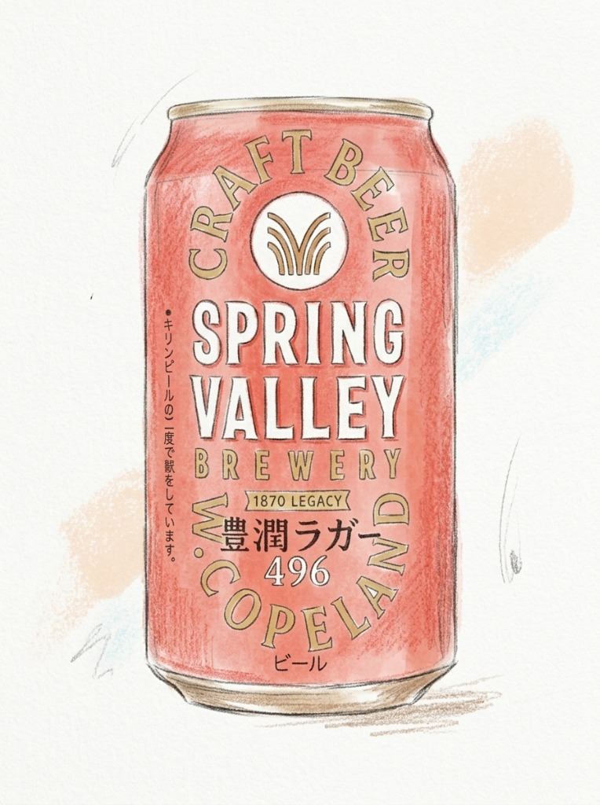
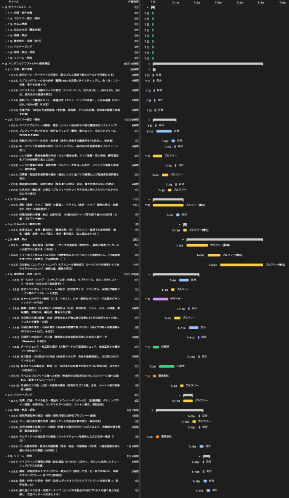
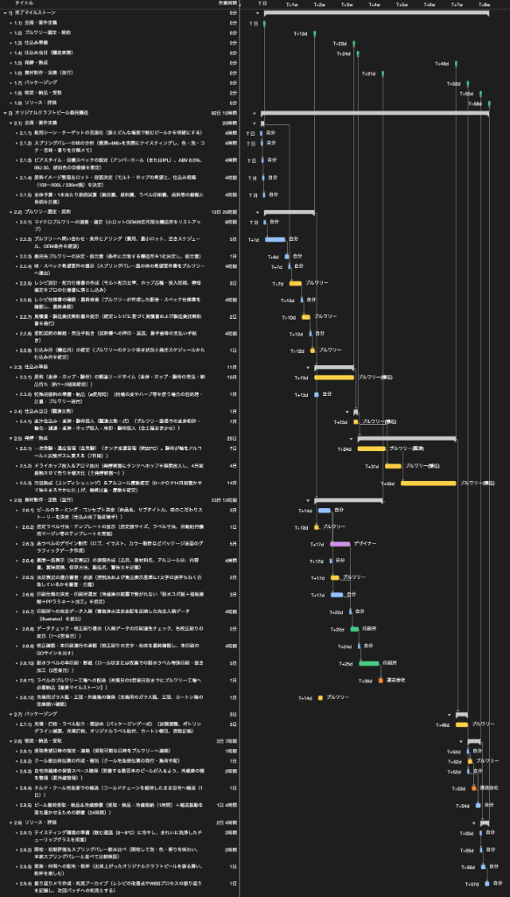

オリジナルクラフトビールを委託醸造するWBSを作ってみた
今回は「WBSで覗いてみた」シリーズとして、小規模醸造所（マイクロブルワリー）への委託による「オリジナルクラフトビール醸造のWBS」を作成しました。
発端は「好きなビールを自分でも作ってみたい」という個人的な興味からで、今回は私のお気に入りの銘柄である『SPRING VALLEY（スプリングバレー）豊潤＜496＞』をイメージしています。
なお、私自身はビールの醸造経験がないため、必要なタスクや作業時間はAIに依頼して整理しました。あくまで作業手順への興味を形にしたもので、プロジェクト管理としての要素や学びはあまりありませんので、あらかじめご了承ください。
※そもそも「WBSとは何か？」「平準化とは何か？」について詳しく知りたい方は、こちらの記事「WBSの勘所」や「ガントチャートの決め手は平準化」も合わせてご覧ください。
1. 目指すビールのイメージと前提条件
まずは、今回イメージしたビールの概要と前提条件を整理します。
ベースとしてイメージしたのは、キリンビールが展開しているクラフトビール『SPRING VALLEY 豊潤＜496＞』です。

このビールを目標に、小規模醸造所（マイクロブルワリー）へ醸造実務を委託し、瓶300〜600本程度（約100〜200L）のオリジナルビールを製造する前提で全体の流れを組み立てました。
2. タスクの洗い出しと所要時間の見積もり
企画から納品までに必要な作業項目を分解し、WBSの初期構造を作成しました。
工程は、企画やブルワリーとの契約から始まり、仕込み、発酵・熟成、ラベル等の資材制作、パッケージング、配送に至る計42件のタスクで構成されています。担当としては、自分、ブルワリー、デザイナー、印刷所、運送会社などを設定しました。
まずは、作業間の依存関係を設定せず、すべての作業が初日から並列に並んだ状態のWBSです。

この段階では、個々の作業にかかる所要時間が把握できます。原料調達（10日）や冷温熟成（14日）、ラベル印刷（5日）など、日数を要する外部作業の特徴がよく分かります。
3. 依存関係の設定とスケジュールの確定
洗い出した各タスクに依存関係を設定し、全体のスケジュールを確定させます。
醸造現場で行われる発酵・熟成（計25日間）と、自分側で進めるラベル等の資材手配（約23日間）は並行して進むことが見て取れます。仕込み後にビールがタンクで発酵している間に、ラベルデザインの作成、法定表記の審査、印刷を進め、瓶詰めの直前までに工場へラベルを納品します。
依存関係を設定した完成版のWBSがこちらです。

初日から完成ビールの受取に至るまでの全体所要期間は、約62日間（約9週間）となりました。
原料調達から仕込み、発酵・熟成に至る経路がクリティカルパスとなっています。ラベル制作については、多少遅れても、発酵・熟成の期間内に納品できれば全体の納期には影響しない時間的な余裕がありそうです。
終わりに
今回は、クラフトビール委託醸造を題材にWBSを作成してみました。未体験の分野ですが、AIの手を借りて実際に工程を分解して整理してみることで、完成までに必要な作業の流れや大まかな期間を把握することができたと思います。
身近な「やってみたいこと」をスケジュールや手順の観点から整理してみる際の参考になれば幸いです。
なお、プロジェクト計画の基礎となるWBSの作り方や平準化の考え方について詳しく知りたい方は、「WBSの勘所」や「ガントチャートの決め手は平準化」もぜひ合わせてご覧ください。
最後までお読みいただきありがとうございました。